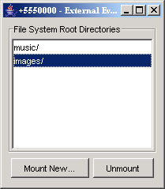

|
|
The J2ME Wireless Toolkit supports JSR 75, the PDA Optional Packages for the J2ME Platform. JSR 75 includes two independent APIs:
FileConnection optional package allows MIDlets access to a local device file system.
This chapter describes how the J2ME Wireless Toolkit implements the FileConnection and PIM APIs.
On a real device, the FileConnection API typically provides access to files stored in the device’s memory or on a memory card.
In the J2ME Wireless Toolkit emulator, the FileConnection API allows MIDlets to access files stored on your desktop computer’s hard disk.
The files that can be accessed using FileConnection are stored in subdirectories of {toolkit}\appdb\{skin}\filesystem. For example, the DefaultColorPhone emulator skin comes with a root directory installed called root1, which contains a file called Readme. The full path of the file is {toolkit}\appdb\DefaultColorPhone\filesystem\root1\Readme.
DefaultColorPhone might have a file system path name of {toolkit}\appdb\DefaultColorPhone.1089982856218\filesystem.
Each subdirectory of filesystem is called a root. The J2ME Wireless Toolkit provides a mechanism for managing roots. While the emualtor is running, choose MIDlet > External events from the emulator window’s menu. You’ll see a utility window for adding and removing roots.

The mounted roots and their contents are available to applications using the FileConnection API.
To add a new root directory, click on Mount New... and fill in a name for the directory. To make a directory inaccessible to the FileConnection API, select it in the list and click Unmount.
The J2ME Wireless Toolkit emulator stores contact, calendar, and to-do information in standard files on your desktop computer’s hard disk. All information is stored in {toolkit}\appdb\{skin}\pim. This directory is shared by all running emulators. Lists are stored in subdirectories of the contacts, events, and todo directories. For example, a contact list called Contacts is contained in {toolkit}\appdb\{skin}\pim\contacts\Contacts.
Inside the list directory, items are stored in vCard or vCalendar format (see http://www.imc.org/pdi/). Contacts are stored in vCard format, while calendar and to-do items are both stored in vCalendar format.
|
|
J2ME Wireless Toolkit User's Guide J2ME Wireless Toolkit 2.2 |
Copyright © 2004 Sun Microsystems, Inc. All rights reserved. Use is subject to the license terms.